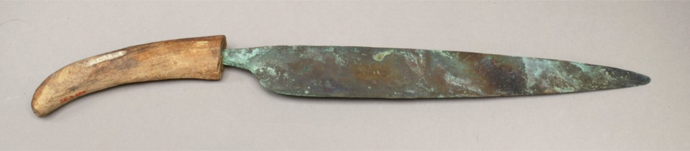
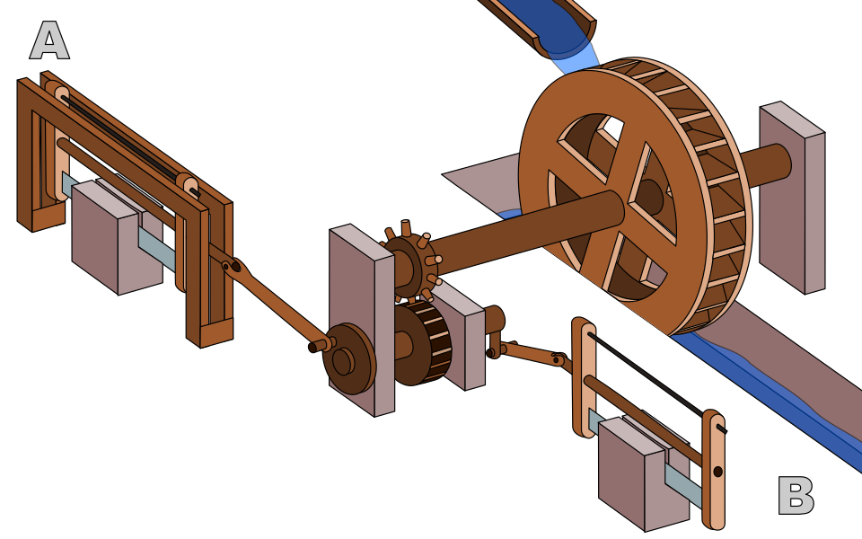
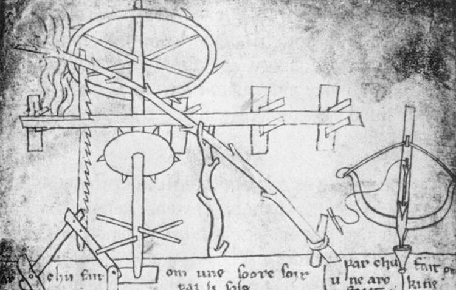
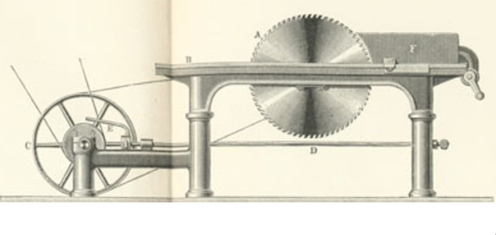
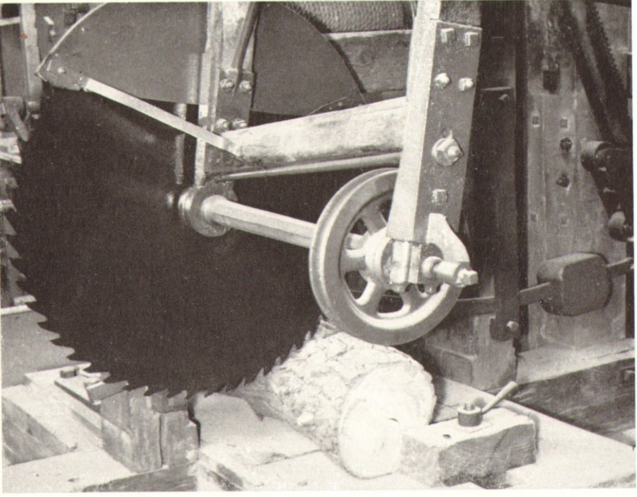
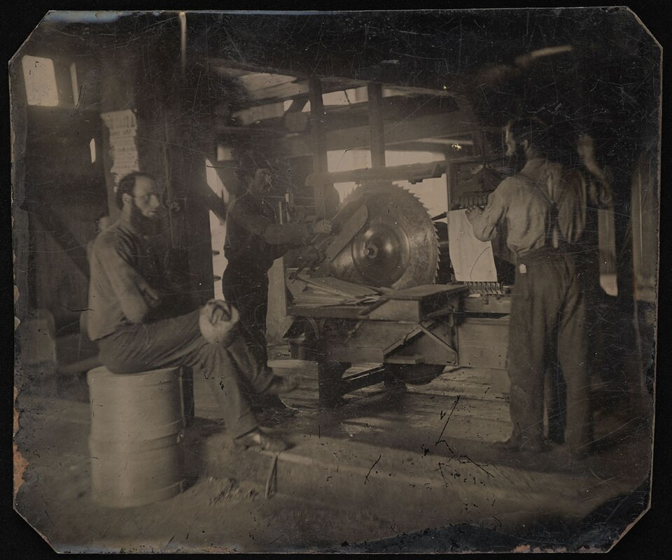
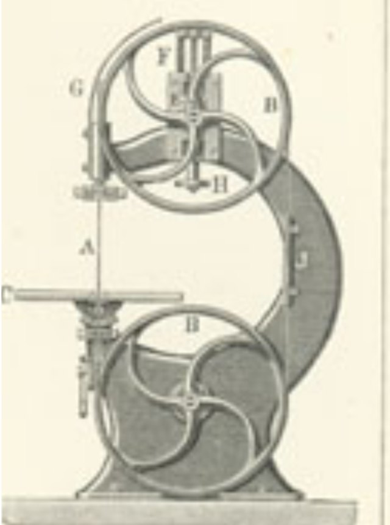

알루미늄 창호 자재를 자르는 절단기는 둥근 톱날을 빠르게 돌려 자릅니다. 사람이 손으로 밀고 당기던 톱이 언제 물레방아와 증기기관의 힘을 얻었는지, 둥근 톱날은 언제 나왔는지, 지금 톱날 끝의 초경은 언제 만들어졌는지 시대 순서로 정리했습니다. 옛 그림과 사진은 모두 출처를 적었고, 사용 조건이 붙은 자료는 그 조건대로 표기했습니다. 톱니 그림과 톱날 두께 그림은 창호종합기계가 그렸습니다.
톱니가 달린 금속 톱은 사람들이 구리를 녹여 틀에 부어 연장을 만들면서 생겼습니다. 이집트 초기 왕조(기원전 3000년 무렵) 유적에서 나온 구리 톱 조각이 남아 있으며, 가장 긴 것은 40cm 정도입니다.
기원전 1500년 무렵부터의 이집트 그림에는 사람이 톱으로 나무를 판자로 자르는 장면이 그려져 있습니다. 이때는 사람이 팔 힘으로 톱을 움직여 잘랐습니다.

고대 이집트의 톱(기원전 1479년 무렵) — 하트셉수트 신전 터에 묻어 둔 물건 가운데 나온 목수 톱입니다. 나무 손잡이에 금속 날이 달려 있고, 날에는 푸른 녹이 슬어 있습니다. 출처: 메트로폴리탄 미술관 25.3.120 · 위키미디어 공용 · CC0(저작권 포기)
로마 시대
톱니를 좌우로 번갈아 벌려 절단 폭을 넓혔습니다
톱니를 하나는 왼쪽, 다음 하나는 오른쪽으로 번갈아 조금씩 벌리는 방법은 로마 시대에 쓰이기 시작한 것으로 봅니다. 톱니를 벌리면 자른 홈(절단 폭)이 톱날 몸통보다 넓어져, 톱날이 홈 안에 끼지 않고 앞뒤로 잘 움직입니다. 얇은 날을 나무틀에 팽팽하게 걸어 쓰는 틀톱도 로마 시대에 발전했습니다.
톱니 좌우 벌림 — 톱니를 번갈아 벌리면 자른 홈(점선 사이)이 날 두께보다 넓어집니다. 알아보기 쉽게 크게 그린 그림이라 실제 비율과는 다릅니다. 그림: 창호종합기계
3세기 후반 · 지금의 튀르키예
물레방아 힘으로 돌을 자르는 톱 기계가 새겨져 있습니다
지금의 튀르키예에 있는 로마 도시 히에라폴리스에서 3세기 후반의 돌 관이 발견되었는데, 그 겉에 물레방아로 톱을 움직여 돌을 자르는 기계가 새겨져 있습니다. 부조 속 기계는 물레방아가 축을 회전시키면 톱니바퀴를 거쳐 크랭크(둥근 판에 단 손잡이)가 돌고, 연결봉이 그 회전을 앞뒤로 미는 움직임으로 바꿔 틀톱을 움직입니다.
크랭크와 연결봉으로 회전을 왕복 운동으로 바꾸는 장치로는 지금까지 알려진 가장 오래된 예입니다. 톱을 움직이는 힘을 사람의 팔에서 물의 힘으로 바꾼 것입니다.

히에라폴리스 물레방아 톱 구조 그림 — 오른쪽 물레방아가 긴 축을 돌리고, 가운데 톱니바퀴를 거쳐 양쪽 둥근 판과 연결봉이 틀톱 두 대(A·B)를 움직여 돌덩이를 자릅니다. 돌 관에 새겨진 그림을 바탕으로 다시 그린 구조 그림입니다. 출처: 위키미디어 공용 「Römische Sägemühle.svg」 · 작성자 Chrkl(論) · CC BY 3.0(출처를 밝히면 쓸 수 있는 조건) · 그림 내용은 고치지 않음
1230년 무렵 · 프랑스
물레방아로 톱을 움직이는 기계가 그림으로 남아 있습니다
1230년 무렵 프랑스의 빌라르 드 온쿠르는 건축물과 기계를 그린 스케치북을 남겼습니다. 이 스케치북에는 물레방아 힘으로 세로로 세운 톱날을 위아래로 움직여 나무를 자르는 기계가 그려져 있고, 그림 아래에는 「톱이 저절로 자르게 하는 방법」이라는 뜻의 글이 적혀 있습니다.

빌라르 드 온쿠르의 톱 기계 — 위쪽에 큰 물레방아 바퀴, 가운데에 돌기가 달린 둥근 바퀴, 왼쪽에 세로로 세운 톱날이 보입니다. 오른쪽 끝의 활 그림은 다른 기계입니다. 원래 쪽에는 다른 기계 그림도 함께 있어, 톱 기계가 그려진 맨 위 칸만 잘라 실었습니다. 출처: 빌라르 드 온쿠르 스케치북(1230년 무렵) · 프랑스 국립도서관 소장 · 위키미디어 공용 · 퍼블릭 도메인(저작권 없음)
1777년 무렵 · 여러 설
원형톱을 처음 만든 사람은 정해지지 않았습니다
둥근 날을 회전시켜 자르는 원형톱을 누가 처음 만들었는지는 아직 정해지지 않았습니다. 가장 자주 인용되는 기록은 1777년 영국 사우샘프턴의 돛 제작자 새뮤얼 밀러가 받은 특허(영국 특허 1152호)입니다. 풍차 힘으로 움직이는 톱 기계에 관한 특허인데, 명세서에 둥근 톱 모양이 짧게 나올 뿐이어서 밀러가 원형톱을 처음 만든 사람은 아닌 것으로 봅니다.
같은 사우샘프턴의 월터 테일러는 1781년 무렵 해군 도르래를 만드는 공장에서 원형톱을 썼습니다. 이 밖에 독일에서 1780년에 나왔다는 설, 네덜란드에서 16~17세기에 이미 썼다는 설도 있으며, 어느 쪽도 확정되지 않았습니다.

원형톱(1885년 무렵 백과사전 그림) — 작업대 가운데로 둥근 톱날이 올라와 있고, 왼쪽의 큰 바퀴가 벨트로 톱날을 돌립니다. 처음 만든 원형톱이 아니라 100년쯤 뒤의 원형톱 모습입니다. 출처: 『마이어 백과사전』(1885년 무렵) 「Sägemaschinen(톱 기계)」 그림 5 · 위키미디어 공용 · 퍼블릭 도메인(저작권 없음)
1803년 · 영국 포츠머스
포츠머스 도르래 공장에서 원형톱을 썼습니다
1803년 영국 포츠머스 해군 공장에서는 배의 줄을 거는 나무 도르래를 기계로 만들기 시작했습니다. 마크 브루넬이 설계하고 헨리 모즐리가 제작한 기계 45대가 쓰였고, 그중에 원형톱도 있었습니다. 모즐리는 이 이야기 2편 「나사산과 탭의 역사」에 나온 나사 깎는 선반을 만든 사람입니다.
이 공장은 증기기관으로 기계를 움직여 같은 부품을 대량으로 만든 초기 공장으로 꼽힙니다. 브루넬은 1805년에 원형톱 특허를 받았지만, 이것이 원형톱을 처음 만들었다는 뜻은 아닙니다.

포츠머스 도르래 공장의 원형톱 기계 — 커다란 둥근 톱날이 아래의 통나무를 자르는 기계입니다. 포츠머스 도르래 공장 기계를 정리한 책에 실린 사진입니다. 출처: K. R. Gilbert, 『The Portsmouth Block-making Machinery』(1965, 영국 과학박물관) 그림 10 · 위키미디어 공용 · 퍼블릭 도메인(영국 정부 저작물로 보호 기간이 끝남)
1870년 무렵 · 캐나다
나무 작업대에 단 큰 원형톱 사진이 남아 있습니다
아래 사진은 1870년 무렵 캐나다 온타리오주 메이벌리의 제재소 안을 찍은 것입니다. 톱니가 큰 원형톱날이 나무 작업대 위로 반쯤 올라와 있고, 그 둘레에 남자 세 사람이 있습니다.

메이벌리 제재소의 원형톱 — 가운데 나무 작업대 위로 톱니가 큰 원형톱날이 올라와 있습니다. 왼쪽 사람은 통에 앉아 있고, 오른쪽 사람은 톱날 쪽에 판자를 대고 서 있습니다. 출처: 캐나다 국립도서관기록관(Library and Archives Canada) · 위키미디어 공용 · CC BY 2.0(출처를 밝히면 쓸 수 있는 조건) · 원본 그대로 실음
1808 ~ 1846년
띠톱은 이음 자리를 붙이는 방법이 나온 뒤에 쓰였습니다
긴 띠 모양 톱날의 양 끝을 이어 고리 모양으로 만들고, 두 바퀴에 걸어 한 방향으로 회전시키는 톱이 띠톱입니다. 1808년 영국의 윌리엄 뉴베리가 띠톱 특허를 받았습니다. 그러나 띠를 이은 자리가 자주 끊어져 오랫동안 널리 쓰이지 못했습니다.
1846년 프랑스의 안 폴린 크레팽이 띠의 이음 자리를 용접하는 방법으로 특허를 받았고, 이 방법을 쓴 페랭 회사가 띠톱을 상품으로 내놓았습니다.

띠톱(1885년 무렵 백과사전 그림) — 위아래 두 바퀴 B에 띠 모양 톱날을 걸어 한 방향으로 돌립니다. 작업대를 지나는 톱날 A에 나무를 대고 자릅니다. 출처: 『마이어 백과사전』(1885년 무렵) 「Sägemaschinen(톱 기계)」 그림 6 · 위키미디어 공용 · 퍼블릭 도메인(저작권 없음)
1926년 ~ 지금
톱니 끝에 초경을 붙인 원형톱날이 나왔습니다
초경(텅스텐 카바이드)은 매우 단단한 소재로, 1926년 독일 크루프 회사가 만들어 1927년 「비디아」라는 이름으로 내놓았습니다. 1940년대 말까지 톱니 끝에 초경을 붙인 원형톱날은 주로 금속을 자르는 데 썼습니다. 1951년에는 나무를 자르는 목공용 초경 톱날도 나왔습니다.
지금 알루미늄·PVC 창호 자재를 자르는 절단기에도 톱니 끝에 초경을 붙인 원형톱날을 사용합니다.
창호종합기계 초경 원형톱날 — 알루미늄·PVC 창호 자재를 자르는 원형톱날입니다. 둘레의 톱니 끝마다 초경 팁이 붙어 있습니다. 이미지: 창호종합기계 · 톱날 · 컷트날 모두 보기
톱날 두께
같은 외경이라도 PVC용은 얇고 알루미늄용은 두껍습니다
창호용 원형톱날은 외경(바깥 지름)이 같아도 날 두께가 다릅니다. 얇은 날은 PVC에, 두꺼운 날은 알루미늄에 알맞습니다. 예를 들어 창호종합기계가 공급하는 외경 405mm·내경 25.4mm 톱날은 PVC용 3.2t와 알루미늄용 4t 두 가지가 있습니다(t는 두께를 밀리미터로 적은 표기입니다). 알루미늄·PVC 겸용 계열은 두께 2.4~4t, 알루미늄 전용 계열은 3~5t입니다.
톱날 두께 비교 — 왼쪽은 정면, 오른쪽 막대는 옆에서 본 두께입니다. 두께 차이를 알아보기 쉽게 키워 그린 그림이라 실제 비율과는 다릅니다. 그림: 창호종합기계
사용하시는 톱날의 외경·내경·날 수·두께를 알려 주시면 맞는 톱날을 찾아 드리고, 없는 치수는 주문 제작으로 만들어 드립니다.
창호종합기계 절단기 · 톱날
알루미늄 절단기와 롤러다이, 톱날을 함께 공급합니다
창호종합기계는 알루미늄 프로파일을 자르는 절단기를 CNC 기종부터 휴대용까지 공급하고, 절단기 옆에서 긴 자재를 받쳐 주는 롤러다이와 조기대, 창호 기계용 초경 톱날도 공급합니다. 롤러다이는 절단기와 따로 판매하고 따로 견적합니다. 기종별 제원은 아래에서 확인하실 수 있습니다.
이집트의 구리 톱과 톱질 그림: 브리태니커 백과사전 「hand tool — Saw」 · 런던 대학 페트리 이집트 고고학 박물관 소장품 UC30854(D. Arnold 1991 · W. B. Emery 1972 인용).
로마의 톱니 벌림과 틀톱: W. Jones · H. Simons, 『The Story of the Saw』(1961, Spear & Jackson 200주년 기념 책).
히에라폴리스 물레방아 톱: T. Ritti · K. Grewe · P. Kessener, 「A Relief of a Water-powered Stone Saw Mill on a Sarcophagus at Hierapolis」, 『Journal of Roman Archaeology』 20권(2007).
빌라르 드 온쿠르 스케치북: 프랑스 국립도서관 소장 필사본 · 『The Story of the Saw』(1961).
원형톱의 시작: 영국 특허 1152호(1777, S. Miller) · N. Ball(1975) · C. Cooper(1984)의 원형톱 기원 연구 · 『The Story of the Saw』(1961).
포츠머스 도르래 공장: 영국 포츠머스 해군 공장 도르래 기계(1803) 관련 자료 · UCL 출판 J. Thom(2010) 브루넬 1805년 원형톱 특허.
띠톱: 영국 특허(1808, W. Newberry) · 프랑스 특허(1846, A. P. Crépin) · 『The Story of the Saw』(1961).
초경 톱날: 『Journal of Light Construction』 공구 명예의 전당(2002).